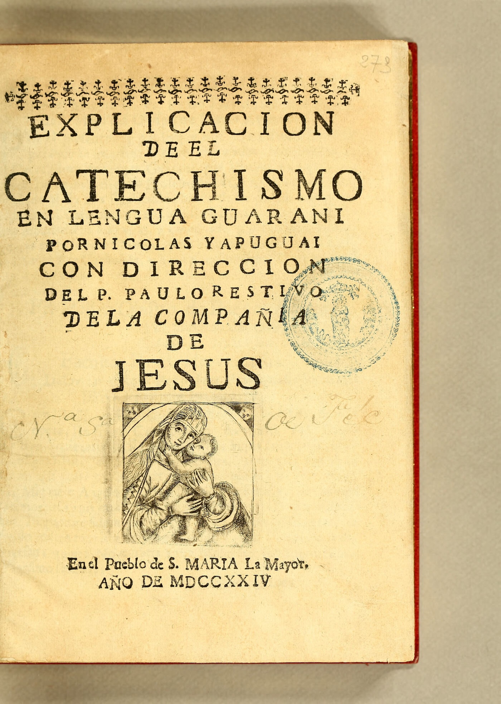

Missões, 1700
As Missões já imprimiam livros.
Arraste

Missões, 1700
As Missões já imprimiam livros.
Arraste

1700
Uma imprensa que viajava entre reduções.
Funcionou em Loreto, Santa María la Mayor e San Francisco Javier até 1727.
Fonte: Misiones Online, 08/09/2026
A mesma vontade, outro ritmo.
Em 1724, um livro em guarani saiu daqui.
De Nicolás Yapuguay, cacique e músico de Santa María.
Imagem: John Carter Brown Library, via Internet Archive (obra de 1724, domínio público)
Antes
Tipos de metal, prensa e muitas mãos.
Hoje
IA que transcreve, traduz e publica.
Inovação não chega. Ela nasce aqui.
Quem resolve um problema local com a melhor ferramenta do seu tempo está inovando. Há mais de trezentos anos e hoje.
Guarde o saber da sua empresa.
A casa da inovação das Missões.
Siga, compartilhe e venha construir com a gente.